Preserved Hero A + Services B → Selected Case Studies direction B
- Understand
A growing telehealth practice
Translate the practice’s services and client journey into a clear, welcoming digital experience.
- Build
Public experience + application foundation
Combine responsive interface work with a Django-based foundation that can support evolving workflows.
- Show
Evidence a buyer can inspect
The live website and Figma work make the delivered interface and product thinking visible.
Open evidence notes +
- Understand
Make marketing planning less fragmented
Frame a product that helps users generate personalized brand marketing assets and a calendar in one place.
- Build
MVP interface + system shape
Support the product through Django implementation, interface prototyping, and documented software architecture.
- Show
Multiple proof layers
LinkedIn updates, interface designs, an interactive prototype, and a C4 model provide product context alongside design and technical evidence.
Open evidence notes +
- Understand
Professional follow-up loses context
Make a large set of LinkedIn connections easier to organize, search, and revisit.
- Build
Authentication + data workflow
Turn uploaded connection data into a Django application with role-aware access, tags, and filtered views.
- Show
A workflow buyers can inspect
The live application and source repository expose both the user flow and implementation.
Open evidence notes +
- Understand
Make technical learning practical
Support learners building useful web skills within a mission-driven workforce program.
- Build
Teach through a working PlantID project
Apply JavaScript and API lessons in PlantID, a working class project that connects a photo-upload flow to plant identification.
- Show
A class project learners can inspect
The live PlantID application and public repository make the experience, implementation, and learning context visible.
Open evidence notes +
- Understand
Technical concepts are hard to retain
Start from a teaching problem observed across adult learners, young learners, and a former coding beginner.
- Build
Draw, Act, Build
Turn a multisensory teaching approach into a Django product where learners can create and save their process.
- Show
An inspectable product hypothesis
The project documents the problem, pedagogy, product direction, and implementation in one visible artifact.
Open evidence notes +